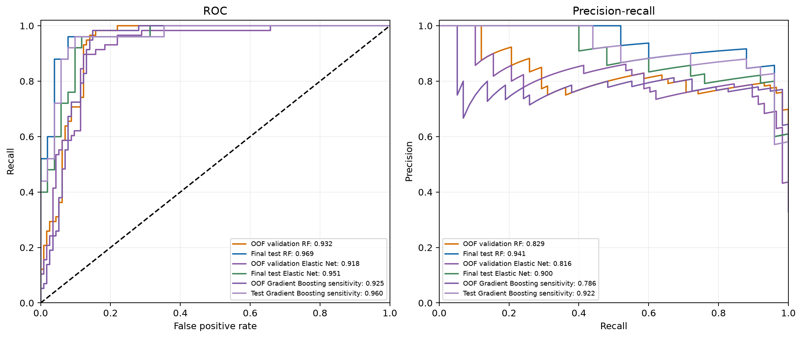
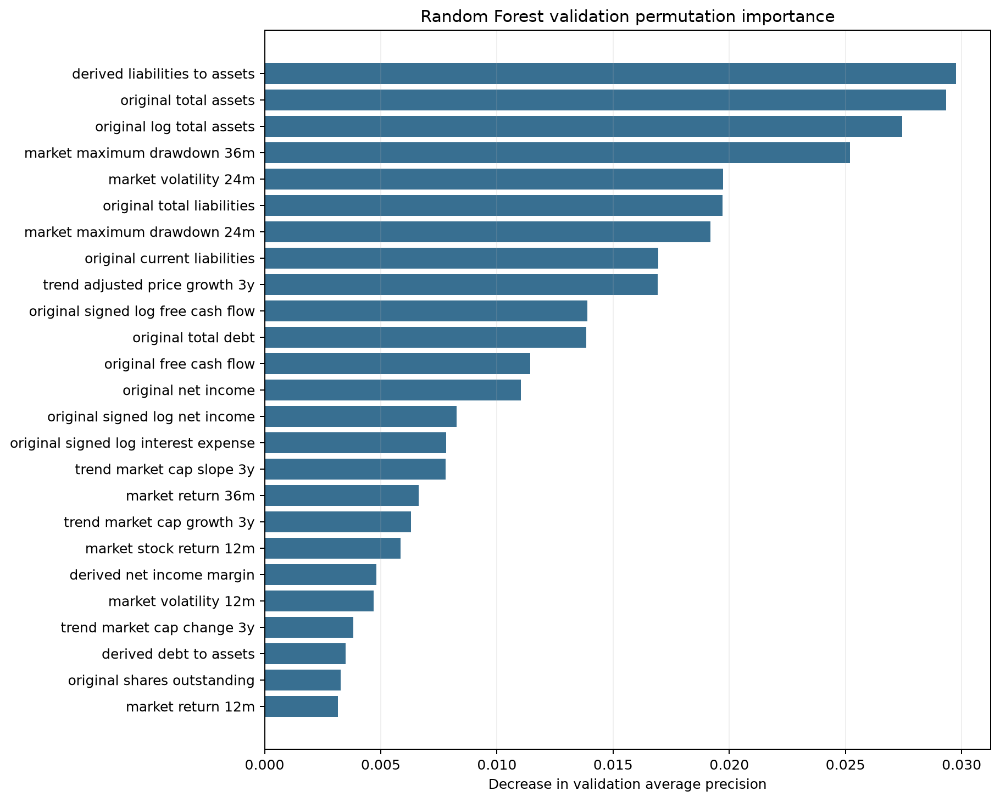

Tree complexity, leaf/split sizes, feature subsampling, row subsampling, and class weights were selected using mean walk-forward validation PR-AUC. The classification threshold was selected from pooled OOF validation predictions. The test set was opened after all settings were frozen. Random Forest is a nonlinear sensitivity benchmark; Elastic Net remains primary.
| selected_candidate | selection_metric | mean_validation_pr_auc | operating_threshold | threshold_source | threshold_metric | n_estimators | max_depth | min_samples_leaf | min_samples_split | max_features | max_samples | class_weight | walk_forward_folds | seed | bootstrap | preprocessing_sha256 | fit_split | active_predictors | versions |
|---|---|---|---|---|---|---|---|---|---|---|---|---|---|---|---|---|---|---|---|
| balanced_subsample_d4_leaf10_split20_mf0.25_ms0.75 | mean walk-forward validation PR-AUC | 0.886447 | 0.49793 | pooled out-of-fold validation predictions | balanced accuracy with sensitivity/specificity tie-breaks | 200 | 4 | 10 | 20 | 0.25 | 0.75 | balanced_subsample | [fold_1, fold_2, fold_3, fold_4] | 42 | True | 000e23bc08f846bada2b1f1ea56e253de0215024a6916a5a9a3de9512f9639e7 | static training only | 538 | {'python': '3.12.5', 'sklearn': '1.9.1', 'numpy': '2.5.3', 'pandas': '3.0.6'} |
| model | n | bankrupt_n | prevalence | threshold | roc_auc | pr_auc_average_precision | pr_auc_trapezoidal | balanced_accuracy | sensitivity | specificity | f1 | brier_score | tn | fp | fn | tp | recall | precision | calibration_intercept | calibration_slope |
|---|---|---|---|---|---|---|---|---|---|---|---|---|---|---|---|---|---|---|---|---|
| Random Forest OOF validation | 172 | 58 | 0.33721 | 0.49793 | 0.93224 | 0.82895 | 0.82638 | 0.91258 | 0.96552 | 0.85965 | 0.86154 | 0.09732 | 98 | 16 | 2 | 56 | 0.96552 | 0.77778 | -0.93096 | 1.3569 |
| Random Forest final test | 76 | 25 | 0.32895 | 0.49793 | 0.96863 | 0.94067 | 0.93939 | 0.90157 | 0.96 | 0.84314 | 0.84211 | 0.089638 | 43 | 8 | 1 | 24 | 0.96 | 0.75 | -1.5256 | 2.0905 |
| Gradient Boosting sensitivity OOF | 172 | 58 | 0.33721 | 0.44035 | 0.92483 | 0.78639 | 0.78177 | 0.91682 | 0.98276 | 0.85088 | 0.86364 | 0.10112 | 97 | 17 | 1 | 57 | 0.98276 | 0.77027 | -0.76123 | 0.54739 |
| Gradient Boosting sensitivity test | 76 | 25 | 0.32895 | 0.44035 | 0.96 | 0.92167 | 0.91987 | 0.91137 | 0.96 | 0.86275 | 0.85714 | 0.080698 | 44 | 7 | 1 | 24 | 0.96 | 0.77419 | -0.74532 | 0.84352 |
| Elastic Net OOF validation | 172 | 58 | 0.33721 | 0.53429 | 0.91848 | 0.81588 | 0.81303 | 0.88687 | 0.89655 | 0.87719 | 0.83871 | 0.20623 | 100 | 14 | 6 | 52 | 0.89655 | 0.78788 | -1.4828 | 7.2936 |
| Elastic Net final test | 76 | 25 | 0.32895 | 0.53429 | 0.95059 | 0.89971 | 0.89737 | 0.90118 | 0.92 | 0.88235 | 0.85185 | 0.19538 | 45 | 6 | 2 | 23 | 0.92 | 0.7931 | -2.1296 | 7.8948 |
| model | n | bankrupt_n | prevalence | threshold | roc_auc | pr_auc_average_precision | pr_auc_trapezoidal | balanced_accuracy | sensitivity | specificity | f1 | brier_score | tn | fp | fn | tp | recall | precision | calibration_intercept | calibration_slope |
|---|---|---|---|---|---|---|---|---|---|---|---|---|---|---|---|---|---|---|---|---|
| Random Forest training diagnostic | 249 | 91 | 0.36546 | 0.49793 | 0.99374 | 0.98932 | 0.98926 | 0.9597 | 0.98901 | 0.93038 | 0.9375 | 0.045789 | 147 | 11 | 1 | 90 | 0.98901 | 0.89109 | -1.4645 | 3.0896 |
Training performance is in-sample and is reported only to diagnose overfitting. It is not used to select hyperparameters, threshold, or features.
Top-risk capture is the fraction of bankrupt observations in the highest-risk 1%, 5%, or 10%. Importance is measured as validation average-precision decrease after feature permutation. Bootstrap summaries resample validation cases and controls within fold; top-10 frequency describes ranking stability, not causal importance.


| feature | mean_permutation_importance | fold_importance_sd | mean_permutation_sd | validation_folds | bootstrap_mean_importance | bootstrap_sd | bootstrap_positive_fraction | bootstrap_top10_frequency |
|---|---|---|---|---|---|---|---|---|
| numeric__derived_liabilities_to_assets | 0.029761 | 0.020893 | 0.015045 | 4 | 0.025014 | 0.019969 | 0.85 | 0.65 |
| numeric__original_total_assets | 0.02934 | 0.034288 | 0.030374 | 4 | 0.027983 | 0.029856 | 0.8 | 0.7875 |
| numeric__original_log_total_assets | 0.027452 | 0.021641 | 0.021381 | 4 | 0.021521 | 0.015327 | 0.7 | 0.5 |
| numeric__market_maximum_drawdown_36m | 0.025191 | 0.026323 | 0.01888 | 4 | 0.021268 | 0.020506 | 0.7 | 0.55 |
| numeric__market_volatility_24m | 0.019739 | 0.016425 | 0.0095256 | 4 | 0.018712 | 0.014743 | 0.7375 | 0.5125 |
| numeric__original_total_liabilities | 0.019698 | 0.013507 | 0.017476 | 4 | 0.017857 | 0.028545 | 0.7 | 0.7125 |
| numeric__market_maximum_drawdown_24m | 0.019195 | 0.019043 | 0.01634 | 4 | 0.015643 | 0.016717 | 0.675 | 0.375 |
| numeric__original_current_liabilities | 0.016952 | 0.012337 | 0.023177 | 4 | 0.01284 | 0.012212 | 0.675 | 0.625 |
| numeric__trend_adjusted_price_growth_3y | 0.01691 | 0.01723 | 0.013043 | 4 | 0.016163 | 0.014879 | 0.6875 | 0.4625 |
| numeric__original_signed_log_free_cash_flow | 0.0139 | 0.016909 | 0.015691 | 4 | 0.012541 | 0.0116 | 0.6875 | 0.4375 |
| numeric__original_total_debt | 0.013841 | 0.011879 | 0.017028 | 4 | 0.013656 | 0.015371 | 0.825 | 0.6 |
| numeric__original_free_cash_flow | 0.011428 | 0.013963 | 0.012915 | 4 | 0.010757 | 0.012527 | 0.55 | 0.325 |
| numeric__original_net_income | 0.011028 | 0.014824 | 0.01364 | 4 | 0.009564 | 0.0095046 | 0.5875 | 0.3625 |
| numeric__original_signed_log_net_income | 0.0082644 | 0.013459 | 0.0080716 | 4 | 0.0068619 | 0.014293 | 0.5 | 0.3375 |
| numeric__original_signed_log_interest_expense | 0.0078151 | 0.017037 | 0.0062637 | 4 | 0.0065576 | 0.012199 | 0.45 | 0.175 |
| numeric__trend_market_cap_slope_3y | 0.007782 | 0.019701 | 0.006688 | 4 | 0.0084071 | 0.015337 | 0.4375 | 0.175 |
| numeric__market_return_36m | 0.006636 | 0.015115 | 0.013963 | 4 | 0.0053494 | 0.010381 | 0.5375 | 0.1875 |
| numeric__trend_market_cap_growth_3y | 0.0063 | 0.017616 | 0.013019 | 4 | 0.0064151 | 0.013765 | 0.5875 | 0.15 |
| numeric__market_stock_return_12m | 0.005846 | 0.011379 | 0.0063123 | 4 | 0.0050772 | 0.0080968 | 0.4 | 0.0875 |
| numeric__derived_net_income_margin | 0.0048198 | 0.0119 | 0.0039397 | 4 | 0.0032516 | 0.010178 | 0.4 | 0.0875 |
| numeric__market_volatility_12m | 0.0046979 | 0.0076795 | 0.0059712 | 4 | 0.0037912 | 0.010246 | 0.55 | 0.125 |
| numeric__trend_market_cap_change_3y | 0.0038205 | 0.0085494 | 0.0041746 | 4 | 0.0026867 | 0.0047454 | 0.3875 | 0.025 |
| numeric__derived_debt_to_assets | 0.0034772 | 0.0061066 | 0.0037626 | 4 | 0.0025871 | 0.0056716 | 0.4 | 0.0375 |
| numeric__original_shares_outstanding | 0.0032854 | 0.0043361 | 0.0019891 | 4 | 0.0025161 | 0.0030001 | 0.4125 | 0.025 |
| numeric__market_return_12m | 0.0031574 | 0.0067814 | 0.0063004 | 4 | 0.0032993 | 0.007066 | 0.6 | 0.0625 |
| numeric__original_long_term_debt | 0.0027548 | 0.0052178 | 0.0088818 | 4 | 0.0017373 | 0.0092832 | 0.475 | 0.2125 |
| numeric__original_market_cap | 0.0024872 | 0.0077508 | 0.0034857 | 4 | 0.0017209 | 0.0058606 | 0.3875 | 0.0625 |
| numeric__market_volatility_36m | 0.0024687 | 0.00673 | 0.0054522 | 4 | 0.0017497 | 0.0080784 | 0.525 | 0.0125 |
| numeric__original_short_term_debt | 0.0022857 | 0.0045714 | 0.00079502 | 4 | 0.0018785 | 0.0019824 | 0.3125 | 0.275 |
| numeric__trend_short_term_debt_change_3y | 0.0022145 | 0.0044289 | 0.002062 | 4 | 0.0017727 | 0.001665 | 0.325 | 0 |
| numeric__trend_total_debt_change_2y | 0.0019386 | 0.0038703 | 0.002309 | 4 | 0.0017604 | 0.0022804 | 0.35 | 0 |
| numeric__trend_working_capital_to_assets_change_2y | 0.001936 | 0.0038721 | 0.0016766 | 4 | 0.0016713 | 0.0019635 | 0.2875 | 0 |
| numeric__derived_operating_cash_flow_margin | 0.0018978 | 0.0050083 | 0.0024722 | 4 | 0.0015368 | 0.0021823 | 0.3125 | 0 |
| numeric__original_log_market_cap | 0.0018397 | 0.0060988 | 0.0029154 | 4 | 0.00068012 | 0.0073912 | 0.3375 | 0.0125 |
| numeric__original_interest_expense | 0.0014487 | 0.0078247 | 0.013141 | 4 | 0.0027561 | 0.01163 | 0.3875 | 0.0875 |
| numeric__derived_ebit_margin | 0.0014113 | 0.0038707 | 0.00099837 | 4 | 0.0013011 | 0.0027986 | 0.25 | 0.0125 |
| numeric__trend_market_cap_growth_2y | 0.0012266 | 0.0042985 | 0.0020307 | 4 | 0.00095655 | 0.0033853 | 0.3625 | 0 |
| numeric__trend_interest_expense_slope_3y | 0.001199 | 0.0029989 | 0.003665 | 4 | 0.0011756 | 0.0037304 | 0.3 | 0 |
| numeric__trend_total_debt_change_3y | 0.0010843 | 0.0031614 | 0.0019405 | 4 | 0.0011075 | 0.0021937 | 0.3625 | 0 |
| numeric__trend_short_term_debt_slope_3y | 0.0010719 | 0.005319 | 0.0017914 | 4 | 0.00040736 | 0.0042521 | 0.3125 | 0 |
| numeric__trend_operating_cash_flow_change_1y | 0.00097156 | 0.0042323 | 0.0028222 | 4 | 0.00017306 | 0.0035974 | 0.35 | 0 |
| numeric__derived_market_to_book | 0.00096801 | 0.001936 | 0.0016766 | 4 | 0.00073496 | 0.00091038 | 0.325 | 0 |
| numeric__trend_operating_cash_flow_to_assets_change_1y | 0.00096801 | 0.001936 | 0.0016766 | 4 | 0.00084389 | 0.0010286 | 0.3125 | 0 |
| numeric__trend_current_ratio_change_2y | 0.00096801 | 0.001936 | 0.0016766 | 4 | 0.00083354 | 0.0009769 | 0.2875 | 0 |
| numeric__derived_working_capital_to_assets | 0.00092593 | 0.0018519 | 0.00080188 | 4 | 0.0007713 | 0.0010562 | 0.2875 | 0 |
| numeric__trend_ebit_margin_change_2y | 0.00092593 | 0.0018519 | 0.00080188 | 4 | 0.00083751 | 0.0012148 | 0.2625 | 0 |
| numeric__trend_total_liabilities_change_2y | 0.00092593 | 0.0018519 | 0.00080188 | 4 | 0.00083751 | 0.0012148 | 0.275 | 0.0125 |
| numeric__trend_total_liabilities_growth_2y | 0.00092593 | 0.0018519 | 0.00080188 | 4 | 0.00083751 | 0.0012148 | 0.2625 | 0 |
| numeric__original_ebit | 0.00092593 | 0.0018519 | 0.00080188 | 4 | 0.00083751 | 0.0012148 | 0.2625 | 0 |
| numeric__trend_current_ratio_growth_3y | 0.00092593 | 0.0018519 | 0.00080188 | 4 | 0.00077955 | 0.001103 | 0.2875 | 0 |
| numeric__derived_free_cash_flow_to_debt | 0.00090086 | 0.0030504 | 0.0026933 | 4 | 0.00067813 | 0.0025882 | 0.4125 | 0 |
| numeric__trend_current_liabilities_change_2y | 0.00084531 | 0.0016906 | 3.2049e-17 | 4 | 0.00074292 | 0.00088467 | 0.275 | 0 |
| numeric__derived_debt_to_equity | 0.00080838 | 0.004726 | 0.0023938 | 4 | 0.00087568 | 0.0024964 | 0.25 | 0 |
| numeric__trend_total_debt_slope_3y | 0.00058433 | 0.0034047 | 0.0012811 | 4 | 0.00051061 | 0.0035324 | 0.3 | 0.0125 |
| numeric__original_current_assets | 0.00049387 | 0.00098775 | 0.00044029 | 4 | 0.00047034 | 0.00042761 | 0.325 | 0.2625 |
| numeric__macro_inflation_change_1y | 0.00046296 | 0.00092593 | 0.00080188 | 4 | 0.00041876 | 0.00060738 | 0.2625 | 0 |
| numeric__original_volume | 0.00046296 | 0.00092593 | 0.00080188 | 4 | 0.00033696 | 0.00049081 | 0.3375 | 0 |
| numeric__trend_current_liabilities_growth_3y | 0.00046296 | 0.00092593 | 0.00080188 | 4 | 0.00041876 | 0.00060738 | 0.2625 | 0 |
| numeric__trend_ebitda_change_3y | 0.00046296 | 0.00092593 | 0.00080188 | 4 | 0.00041876 | 0.00060738 | 0.2625 | 0 |
| numeric__trend_operating_cash_flow_to_debt_growth_2y | 0.00046296 | 0.00092593 | 0.00080188 | 4 | 0.0003828 | 0.0007791 | 0.25 | 0 |
| numeric__trend_total_assets_change_2y | 0.00046296 | 0.00092593 | 0.00080188 | 4 | 0.00041876 | 0.00060738 | 0.2625 | 0 |
| numeric__trend_total_assets_slope_3y | 0.00046296 | 0.00092593 | 0.00080188 | 4 | 0.00042701 | 0.00065427 | 0.2875 | 0 |
| numeric__trend_turnover_growth_3y | 0.00046296 | 0.00092593 | 0.00080188 | 4 | 0.00041876 | 0.00060738 | 0.2625 | 0 |
| numeric__trend_working_capital_to_assets_change_1y | 0.00046296 | 0.00092593 | 0.00080188 | 4 | 0.00041876 | 0.00060738 | 0.2625 | 0 |
| numeric__original_signed_log_operating_cash_flow | 0.00046296 | 0.00092593 | 0.00080188 | 4 | 0.00038358 | 0.00051636 | 0.2625 | 0 |
| numeric__trend_liabilities_to_assets_growth_2y | 0.00046296 | 0.00092593 | 0.00080188 | 4 | 0.0003828 | 0.0007791 | 0.25 | 0 |
| numeric__trend_operating_cash_flow_to_debt_change_1y | 0.00046296 | 0.00092593 | 0.00080188 | 4 | 0.00042288 | 0.00063082 | 0.2875 | 0 |
| numeric__trend_adjusted_price_growth_1y | 0.00044555 | 0.00051565 | 0.0006713 | 4 | 0.00054321 | 0.00080238 | 0.3875 | 0 |
| numeric__trend_shares_outstanding_growth_3y | 0.00043573 | 0.0021399 | 0.0018432 | 4 | 0.00050538 | 0.0013191 | 0.2875 | 0 |
| numeric__trend_debt_growth_1y | 0.00037191 | 0.0024546 | 0.00080188 | 4 | 0.00049433 | 0.0018742 | 0.2375 | 0 |
| numeric__original_accounts_receivable | 0.00025348 | 0.0011364 | 0.0011647 | 4 | 0.00029138 | 0.00081182 | 0.275 | 0.0875 |
| numeric__derived_operating_cash_flow_to_debt | 0.00021738 | 0.0011494 | 0.00231 | 4 | 0.00062158 | 0.0017143 | 0.3625 | 0.0125 |
| numeric__trend_working_capital_change_3y | 0.0002121 | 0.00042421 | 0.00036738 | 4 | 0.0002227 | 0.00029872 | 0.275 | 0 |
| numeric__trend_free_cash_flow_change_1y | 0.0002121 | 0.00042421 | 0.00036738 | 4 | 0.00021806 | 0.00030174 | 0.3125 | 0 |
| numeric__derived_interest_coverage | 0.00017634 | 0.0028453 | 0.0059141 | 4 | -7.3363e-05 | 0.0042181 | 0.3125 | 0.025 |
| numeric__trend_market_cap_growth_1y | 0.00017056 | 0.004119 | 0.0018812 | 4 | -6.9124e-05 | 0.0047107 | 0.3375 | 0.0125 |
| numeric__market_market_cap_change_12m | 9.3619e-05 | 0.0013634 | 0.0011217 | 4 | 0.00018997 | 0.001047 | 0.25 | 0 |
| numeric__trend_total_debt_change_1y | 4.3992e-05 | 0.0014411 | 0.0011647 | 4 | 0.00012058 | 0.00087836 | 0.25 | 0 |
| numeric__trend_debt_to_assets_change_1y | 2.7432e-05 | 0.00064871 | 0.00068724 | 4 | 0.00010831 | 0.00051854 | 0.2375 | 0 |
| numeric__trend_ebit_to_assets_growth_1y | 2.6186e-06 | 5.2371e-06 | 0.00063239 | 4 | 9.1204e-05 | 0.00032175 | 0.2375 | 0 |
| categorical__industry_Advertising & Marketing | 0 | 0 | 0 | 3 | -5.5511e-18 | 7.185e-17 | 0.18333 | 0 |
| categorical__industry_Aerospace & Defense | 0 | 0 | 0 | 4 | -4.1633e-18 | 6.9485e-17 | 0.175 | 0 |
| categorical__industry_Apparel & Textile Products | 0 | 0 | 0 | 4 | -4.1633e-18 | 6.9485e-17 | 0.175 | 0 |
| categorical__industry_Automotive | 0 | 0 | 0 | 4 | -4.1633e-18 | 6.9485e-17 | 0.175 | 0 |
| categorical__industry_Beverages | 0 | unavailable | 0 | 1 | 1.1102e-17 | 7.9735e-17 | 0.3 | 0 |
| categorical__industry_Cable & Satellite | 0 | 0 | 0 | 3 | -5.5511e-18 | 7.185e-17 | 0.18333 | 0 |
| categorical__industry_Chemicals | 0 | 0 | 0 | 3 | -5.5511e-18 | 7.185e-17 | 0.18333 | 0 |
| categorical__industry_Commercial Support Services | 0 | 0 | 0 | 4 | -4.1633e-18 | 6.9485e-17 | 0.175 | 0 |
| categorical__industry_Construction Materials | 0 | 0 | 0 | 4 | -4.1633e-18 | 6.9485e-17 | 0.175 | 0 |
| categorical__industry_Consumer Services | 0 | 0 | 0 | 4 | -4.1633e-18 | 6.9485e-17 | 0.175 | 0 |
| categorical__industry_Electric Utilities | 0 | 0 | 0 | 4 | -4.1633e-18 | 6.9485e-17 | 0.175 | 0 |
| categorical__industry_Electrical Equipment | 0 | 0 | 0 | 4 | -4.1633e-18 | 6.9485e-17 | 0.175 | 0 |
| categorical__industry_Entertainment Content | 0 | 0 | 0 | 4 | -4.1633e-18 | 6.9485e-17 | 0.175 | 0 |
| categorical__industry_Forestry, Paper & Wood Products | 0 | 0 | 0 | 4 | -4.1633e-18 | 6.9485e-17 | 0.175 | 0 |
| categorical__industry_Health Care Facilities & Svcs | 0 | 0 | 0 | 4 | -4.1633e-18 | 6.9485e-17 | 0.175 | 0 |
| categorical__industry_Home & Office Products | 0 | 0 | 0 | 4 | -4.1633e-18 | 6.9485e-17 | 0.175 | 0 |
| categorical__industry_Home Construction | 0 | 0 | 0 | 3 | -5.5511e-18 | 7.185e-17 | 0.18333 | 0 |
| categorical__industry_IT Services | 0 | 0 | 0 | 4 | -4.1633e-18 | 6.9485e-17 | 0.175 | 0 |
| categorical__industry_Industrial Support Services | 0 | 0 | 0 | 4 | -4.1633e-18 | 6.9485e-17 | 0.175 | 0 |
| categorical__industry_Internet Media & Services | 0 | unavailable | 0 | 1 | 1.1102e-17 | 7.9735e-17 | 0.3 | 0 |
| candidate_id | n_estimators | max_depth | min_samples_leaf | min_samples_split | max_features | max_samples | class_weight | eligible | folds_completed | mean_validation_pr_auc | mean_validation_roc_auc | mean_validation_brier_score |
|---|---|---|---|---|---|---|---|---|---|---|---|---|
| balanced_subsample_d4_leaf10_split20_mf0.25_ms0.75 | 200 | 4 | 10 | 20 | 0.25 | 0.75 | balanced_subsample | True | 4 | 0.88645 | 0.93733 | 0.098372 |
| balanced_subsample_d4_leaf10_split50_mf0.25_ms0.75 | 200 | 4 | 10 | 50 | 0.25 | 0.75 | balanced_subsample | True | 4 | 0.88433 | 0.9348 | 0.10183 |
| balanced_subsample_d2_leaf10_split50_mf0.25_ms0.75 | 200 | 2 | 10 | 50 | 0.25 | 0.75 | balanced_subsample | True | 4 | 0.87724 | 0.93389 | 0.102 |
| balanced_subsample_d4_leaf25_split20_mf0.25_ms0.75 | 200 | 4 | 25 | 20 | 0.25 | 0.75 | balanced_subsample | True | 4 | 0.8765 | 0.93027 | 0.10899 |
| balanced_subsample_d4_leaf25_split50_mf0.25_ms0.75 | 200 | 4 | 25 | 50 | 0.25 | 0.75 | balanced_subsample | True | 4 | 0.8765 | 0.93027 | 0.10899 |
| balanced_subsample_d2_leaf10_split20_mf0.25_ms0.5 | 200 | 2 | 10 | 20 | 0.25 | 0.5 | balanced_subsample | True | 4 | 0.87588 | 0.93071 | 0.10216 |
| balanced_subsample_d2_leaf25_split20_mf0.25_ms0.75 | 200 | 2 | 25 | 20 | 0.25 | 0.75 | balanced_subsample | True | 4 | 0.87462 | 0.92991 | 0.10911 |
| balanced_subsample_d2_leaf25_split50_mf0.25_ms0.75 | 200 | 2 | 25 | 50 | 0.25 | 0.75 | balanced_subsample | True | 4 | 0.87462 | 0.92991 | 0.10911 |
| balanced_subsample_d2_leaf10_split20_mf0.25_ms0.75 | 200 | 2 | 10 | 20 | 0.25 | 0.75 | balanced_subsample | True | 4 | 0.87432 | 0.93402 | 0.10014 |
| balanced_subsample_d4_leaf10_split20_mf0.25_ms0.5 | 200 | 4 | 10 | 20 | 0.25 | 0.5 | balanced_subsample | True | 4 | 0.87215 | 0.93017 | 0.10138 |
| balanced_subsample_d4_leaf10_split20_mf0.1_ms0.75 | 200 | 4 | 10 | 20 | 0.1 | 0.75 | balanced_subsample | True | 4 | 0.87015 | 0.93027 | 0.10501 |
| balanced_subsample_d4_leaf10_split20_mf0.1_ms0.5 | 200 | 4 | 10 | 20 | 0.1 | 0.5 | balanced_subsample | True | 4 | 0.85584 | 0.92592 | 0.10696 |
| balanced_subsample_d2_leaf10_split20_mf0.1_ms0.75 | 200 | 2 | 10 | 20 | 0.1 | 0.75 | balanced_subsample | True | 4 | 0.85402 | 0.92717 | 0.10732 |
| balanced_subsample_d2_leaf10_split20_mf0.1_ms0.5 | 200 | 2 | 10 | 20 | 0.1 | 0.5 | balanced_subsample | True | 4 | 0.8504 | 0.92427 | 0.10819 |
| balanced_subsample_d4_leaf10_split50_mf0.1_ms0.75 | 200 | 4 | 10 | 50 | 0.1 | 0.75 | balanced_subsample | True | 4 | 0.84819 | 0.92094 | 0.1114 |
| balanced_subsample_d4_leaf25_split20_mf0.1_ms0.75 | 200 | 4 | 25 | 20 | 0.1 | 0.75 | balanced_subsample | True | 4 | 0.84557 | 0.92131 | 0.1166 |
| balanced_subsample_d4_leaf25_split50_mf0.1_ms0.75 | 200 | 4 | 25 | 50 | 0.1 | 0.75 | balanced_subsample | True | 4 | 0.84557 | 0.92131 | 0.1166 |
| balanced_subsample_d2_leaf25_split20_mf0.1_ms0.75 | 200 | 2 | 25 | 20 | 0.1 | 0.75 | balanced_subsample | True | 4 | 0.84288 | 0.9206 | 0.1169 |
| balanced_subsample_d2_leaf25_split50_mf0.1_ms0.75 | 200 | 2 | 25 | 50 | 0.1 | 0.75 | balanced_subsample | True | 4 | 0.84288 | 0.9206 | 0.1169 |
| balanced_subsample_d2_leaf10_split50_mf0.1_ms0.5 | 200 | 2 | 10 | 50 | 0.1 | 0.5 | balanced_subsample | True | 4 | 0.83731 | 0.91661 | 0.11924 |
| balanced_subsample_d2_leaf10_split50_mf0.1_ms0.75 | 200 | 2 | 10 | 50 | 0.1 | 0.75 | balanced_subsample | True | 4 | 0.83715 | 0.9197 | 0.11212 |
| balanced_subsample_d4_leaf10_split50_mf0.25_ms0.5 | 200 | 4 | 10 | 50 | 0.25 | 0.5 | balanced_subsample | True | 4 | 0.83644 | 0.91659 | 0.11429 |
| balanced_subsample_d2_leaf25_split20_mf0.1_ms0.5 | 200 | 2 | 25 | 20 | 0.1 | 0.5 | balanced_subsample | True | 4 | 0.83544 | 0.91622 | 0.12299 |
| balanced_subsample_d2_leaf25_split50_mf0.1_ms0.5 | 200 | 2 | 25 | 50 | 0.1 | 0.5 | balanced_subsample | True | 4 | 0.83544 | 0.91622 | 0.12299 |
| balanced_subsample_d4_leaf25_split20_mf0.1_ms0.5 | 200 | 4 | 25 | 20 | 0.1 | 0.5 | balanced_subsample | True | 4 | 0.83544 | 0.91622 | 0.12299 |
| balanced_subsample_d4_leaf25_split50_mf0.1_ms0.5 | 200 | 4 | 25 | 50 | 0.1 | 0.5 | balanced_subsample | True | 4 | 0.83544 | 0.91622 | 0.12299 |
| balanced_subsample_d2_leaf10_split50_mf0.25_ms0.5 | 200 | 2 | 10 | 50 | 0.25 | 0.5 | balanced_subsample | True | 4 | 0.83507 | 0.91604 | 0.11419 |
| balanced_subsample_d4_leaf10_split50_mf0.1_ms0.5 | 200 | 4 | 10 | 50 | 0.1 | 0.5 | balanced_subsample | True | 4 | 0.83455 | 0.91626 | 0.11907 |
| balanced_subsample_d2_leaf25_split20_mf0.25_ms0.5 | 200 | 2 | 25 | 20 | 0.25 | 0.5 | balanced_subsample | True | 4 | 0.8318 | 0.91308 | 0.11828 |
| balanced_subsample_d2_leaf25_split50_mf0.25_ms0.5 | 200 | 2 | 25 | 50 | 0.25 | 0.5 | balanced_subsample | True | 4 | 0.8318 | 0.91308 | 0.11828 |
| balanced_subsample_d4_leaf25_split20_mf0.25_ms0.5 | 200 | 4 | 25 | 20 | 0.25 | 0.5 | balanced_subsample | True | 4 | 0.8318 | 0.91308 | 0.11829 |
| balanced_subsample_d4_leaf25_split50_mf0.25_ms0.5 | 200 | 4 | 25 | 50 | 0.25 | 0.5 | balanced_subsample | True | 4 | 0.8318 | 0.91308 | 0.11829 |
Hyperparameter ranking uses mean validation PR-AUC; validation ROC-AUC and Brier are tie-breakers only. No test metric influenced tuning, the threshold, or importance analysis. The sampled matched cohort does not estimate population bankruptcy prevalence.